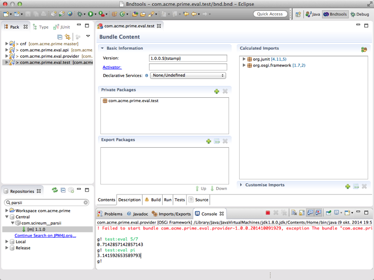
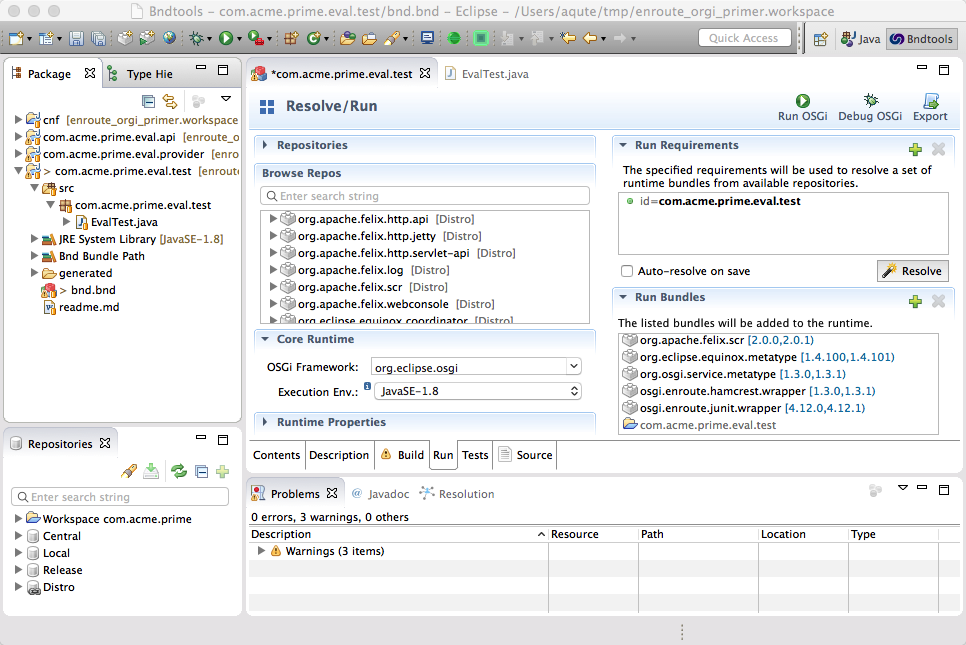
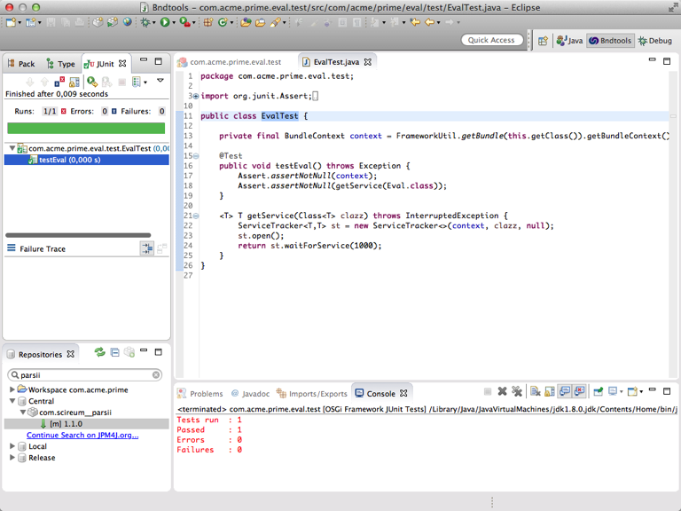

Testing in OSGi
What You Will Learn in This Section
In this section we define OSGi based testing in an actual framework. OSGi tests start a configured framework and then execute a JUnit Runner to execute the tests. The test framework is completely integrated with the Eclipse JUnit support, it works almost identical.
The intention of an OSGi JUnit test is to test service contracts; in general it is used to test if a provider fulfills the service contract. This means these tests are black-box tests; there is no knowledge about their inside.
If you’re running the framework from the previous tutorial section then it is now time to kill it. In this section we run automated tests.
OSGi JUnit Test
An OSGi JUnit test is a new project. So create a com.acme.prime.eval.test project, be sure to use the OSGi enRoute templates. Since this project name ends with .test we automatically get a proper test setup.

A tad confusing is the fact that in an OSGi Test project you will work in the src directory and not the test directory because we create a test bundle; if we used the test source directory we would never end up with any classes in the bundle. Classes in the test directory are never added to the JAR file.
The OSGi enRoute template is already filled with a simple test case that gives us a Bundle Context but that test case does not use our service yet.
package com.acme.prime.eval.test;
import org.junit.Assert;
import org.junit.Test;
import org.osgi.framework.BundleContext;
import org.osgi.framework.FrameworkUtil;
public class EvalTest {
private final BundleContext context = FrameworkUtil.getBundle(this.getClass()).getBundleContext();
@Test
public void testEval() throws Exception {
Assert.assertNotNull(context);
}
}
So how do we get the Eval service to test? This is a bit cumbersome because we do not get support from DS. Alas, back to the old days when you had to get a service by hand:
<T> T getService(Class<T> clazz) throws InterruptedException {
ServiceTracker<T,T> st = new ServiceTracker<>(context, clazz, null);
st.open();
return st.waitForService(1000);
}
We of course leak service trackers but for a test case that is not a major problem.
We now need to add a test if our service exists.
Assert.assertNotNull(getService(Eval.class));
However, if we add this code we find that Eclipse can’t find the Eval class. Remember the problem? We need to add the com.acme.prime.eval.api project to our build path. Double click the bnd.bnd file, select Build and add the com.acme.prime.eval.api project. Once the bnd.bnd file is saved we can import the Eval class and remove the error. Remember that the current provider also exports the com.acme.prime.eval.api package. It is bad practice to place an implementation bundle on your classpath: Always try to compile against the service contract.
We’re almost ready to run, ehh, test. But before we do the testing, let’s think about our runtime. How should our environment look? Let’s go to the Run tab of the bnd.bnd file. The list of initial requirements contains the com.acme.prime.eval.test project. During a resolve, this will drag in the provider because it has the API and the required JUnit bundles.
Hit the Resolve button and save. We have only a few dependencies, all caused by the fact that the provider uses Declarative Services (DS) a.k.a. SCR.
Our bundles now look as follows:

To run the test we can select any of: the com.acme.prime.eval.test project, its src folder, a package in this folder, a class in this package, a method in the a class, or the bnd.bnd file. We can then do @/Debug As/Bnd OSGi Test Launcher (JUnit) or you can use the keyboard shortcut (Shift+Alt+X C). This executes the tests in the specified scope. The test results are then reported in the standard JUnit view. Remember the pilots and retractable gear analogy? Want to bet you confuse the entries JUnit Test and Bnd OSGi Test Launcher (JUnit)? Or even worse now, you might accidentally select Bnd OSGi Run Launcher. If you do the latter, you get an error that the bundles cannot be resolved because JUnit is missing.
And then … the green bar!

Testing & Debugging
The current tests only tests if the service exists. So lets add some more:
@Test
public void trig() throws Exception {
Assert.assertSame( 1, (int)getService(Eval.class).eval("sin(1)*sin(1)+cos(1)*cos(1)"));
}
The tests are run in a real OSGi Framework but this does not stop us from debugging. Just click on the left margin next to the trig function, select the function name, and then @/Debug As/Bnd OSGi Test Launcher (JUnit) (Shift+Alt+D K). The debugger stops in the method and you can now single step, even if this crosses to another bundle.
If you make changes then in this case the changes are not immediately reflected in the running framework.
How Does it Work?
Test bundles are normal bundles but are marked with a special header: Test-Cases. This header contains a list with class names that contain JUnit tests. If you look in the bnd.bnd Source tab then you see that this header looks like:
Test-Cases: ${test-cases}
The ${test-cases} macro is set by OSGi enRoute; it calculates the classes that either extend junit.framework.TestCase class or that use the the JUnit 4 annotations like @Test (you cannot combine these mechanisms). In our example the expansion looks like:
Test-Cases: com.acme.prime.eval.test.EvalTest
You can verify this by double clicking on the generated/com.acme.prime.eval.test.jar and looking for the Test-Cases header in the manifest.
When you launch an OSGi JUnit test, bnd will create a new framework with the set run bundles. On the class path for this framework it also adds a bundle aQute.junit as well as any JARs listed on the -testpath. Any features available for running a framework can also be used for running a test, e.g. -runproperties and -runtrace.
After the bundles are all started the aQute.junit bundle will scan all bundles for the magic Test-Cases header. It will then load those classes and run their tests.
If the tests are run from the Eclipse JUnit framework then the model is slightly different. Then bnd sets up a new framework as indicated but it passes the set of classes/methods that Eclipse had decided from the selection. For example, all tests in a package. The aQute.junit will then only execute those classes/methods and will report the results back to Eclipse so they can be shown in the JUnit view.